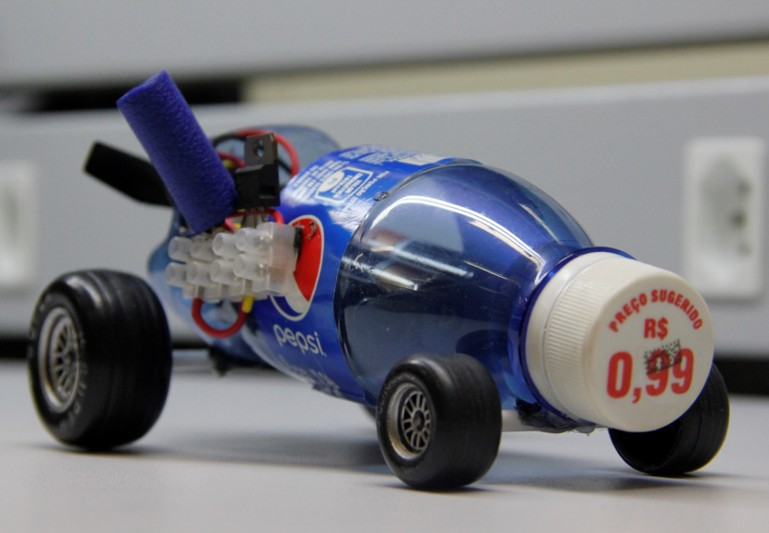
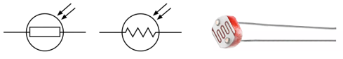
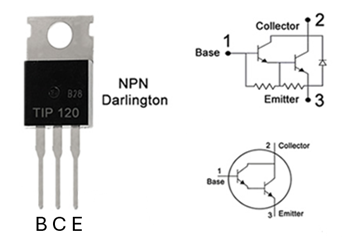
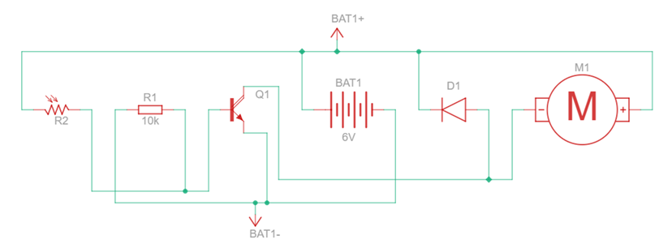
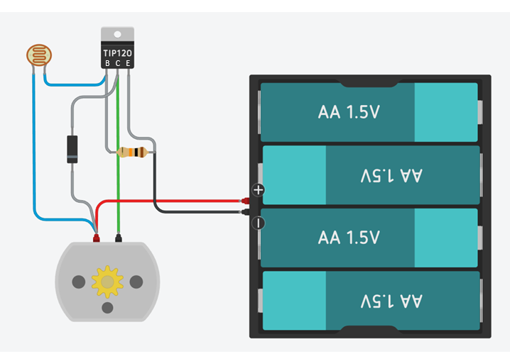
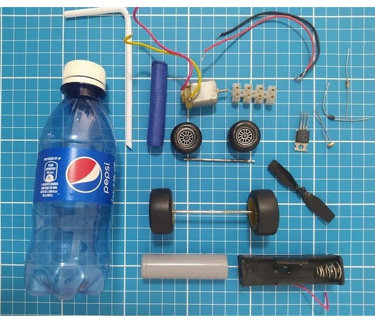
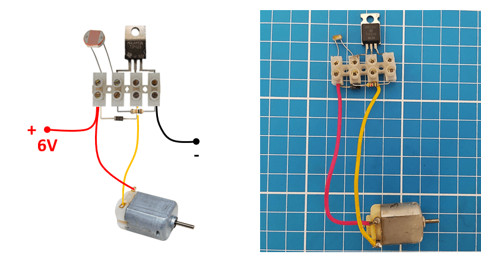

Carrinho Mecatrônico
Neste projeto, vamos transformar uma simples garrafa PET em um carrinho mecatrônico cheio de personalidade!
O Carrinho Mecatrônico é construído com uma pequena garrafa PET, um motor com hélice e um sensor de luz feito com LDR e transistor TIP120. E o melhor: aqui não tem controle remoto, aplicativo ou Wi-Fi. Quem assume o volante é uma simples lanterna!
Ao iluminar o sensor, o circuito aciona o motor, a hélice começa a girar e o carrinho sai andando. Com a lanterna na mão, você vai aprendendo a “pilotar” o carrinho enquanto descobre, na prática, como a luz, a eletrônica e a mecânica podem trabalhar juntas..
Tudo será construído passo a passo, reaproveitando materiais e colocando a criatividade para funcionar. Então, prepare a garrafa PET, a lanterna, o ferro de solda e o bom humor, porque neste projeto a gambiarra é permitida — desde que funcione! 🚗🔦⚡


Sensor de luz que controla o motor
Aqui começa a mágica do Carrinho Mecatrônico! 🚗🔦
Neste projeto, uma simples lanterna vai fazer o papel de controle remoto. Quando a luz é apontada para o sensor, o circuito percebe a iluminação, aciona o motor e a hélice começa a girar. Quando a luz deixa de iluminar o sensor, o motor para.
Mas como um circuito consegue “perceber” a luz?
A resposta está em um componente muito simples: o LDR.
LDR

O LDR (Light Dependent Resistor), também conhecido como resistor dependente de luz, é um componente cuja resistência elétrica varia de acordo com a quantidade de luz que recebe.
Podemos pensar no LDR como um “olho eletrônico” do nosso carrinho:
🟡 Com muita luz: a resistência do LDR diminui.
⚫️ Com pouca luz: a resistência do LDR aumenta.
Essa característica permite transformar uma mudança de iluminação em uma mudança no comportamento do circuito. E é exatamente isso que vamos aproveitar para controlar o motor.
TIP 120

O TIP120 é um transistor do tipo Darlington e será utilizado neste projeto para controlar a corrente que alimenta o motor. Para simplificar, podemos imaginar o TIP120 como um interruptor eletrônico.
Podemos resumir o funcionamento do Carrinho Mecatrônico em quatro passos:
🔦 A lanterna ilumina o LDR.
💡 A resistência do LDR diminui, permitindo o acionamento do TIP120.
⚡ O TIP120 conduz corrente, alimentando o motor.
🚗 O motor gira a hélice e o carrinho se movimenta.
O circuito também possui um resistor de 10 kΩ. Ele ajuda a definir o comportamento do circuito de controle do TIP120, evitando que a entrada do transistor fique sem uma referência definida quando a iluminação sobre o LDR diminui. Para o nosso projeto, podemos pensar nele como um componente que ajuda a manter o circuito sob controle quando a lanterna não está iluminando o sensor.
Este circuito também possui um pequeno diodo que ajuda a proteger o TIP120 dos efeitos elétricos produzidos pelo motor.
Circuito elétrico



Lista de materiais
Tudo o que você precisa para construir o carrinho é uma garrafa PET, alguns componentes eletrônicos de baixo custo e materiais que podem ser reaproveitados de carrinhos de brinquedo, brinquedos quebrados e outras sucatas.
A ideia aqui é simples: antes de comprar alguma coisa, dê uma olhada naquela caixa de "coisas que um dia podem ser úteis". Você provavelmente sabe qual é. 😄

Separe os seguintes materiais:
- 1 Garrafa PET
- 2 conjuntos de rodas
- 1 hélice de qualquer tipo que possa ser adaptada ao motor
- 1 motor DC (3 a 6 V)
- 1 LDR de 5mm
- 1 Transistor TIP120 ou equivalente
- 1 Diodo 1N4007 ou equivalente
- 1 resistor de 10 kΩ — código de cores: marrom, preto, laranja e dourado
- 1 Suporte para uma bateria de íon de lítio
- 1 bateria íon de lítio de 3.7 V
- 1 barra de conectores parafusados (tipo sindal) de 4 terminais
- Fios, parafusos, fita isolante e cola quente
Dica: não precisa comprar tudo novo. A graça do projeto está justamente em reaproveitar materiais. Um carrinho quebrado pode perder as rodas, mas ganhar uma segunda chance na vida. 😄
Observações:
Neste projeto, utilizei uma garrafa PET pequena como estrutura do carrinho e uma bateria de íons de lítio de 3,7 V como fonte de alimentação.
Mas você não precisa seguir a receita à risca. A garrafa PET pode ser substituída por papelão, plástico, madeira fina ou outro material leve e resistente que você tenha disponível.
A bateria de íons de lítio também pode ser substituída por pilhas AA. Nesse caso, utilize um suporte para:
- 3 pilhas AA = 4,5 V
- 4 pilhas AA = 6 V
Como o motor utilizado trabalha entre 3 e 6 V, essas duas opções são adequadas. A versão com 6 V tende a proporcionar melhor desempenho.
⚠️ Atenção: baterias de íons de lítio devem ser utilizadas com cuidado. Não provoque curto-circuitos, não perfure a bateria e utilize um suporte adequado. Se houver qualquer sinal de aquecimento anormal, interrompa o uso.
Montagem
Agora é hora de colocar a mão na massa!
1. Comece montando o circuito elétrico
A barra de conectores parafusados (tipo sindal) é a nossa grande aliada aqui! Ela funciona como um "lego" da eletrônica: você encaixa os terminais dos componentes, aperta o parafuso com uma chave de fenda e pronto. 🪛⚡

Siga este passo a passo para montar o circuito nos 4 terminais da barra (vamos numerar da esquerda para a direita como 1, 2, 3 e 4):
-
Posicione o transistor TIP120: Olhando o transistor de frente (com a parte escrita virada
para você), encaixe os três pinos dele diretamente nos terminais 2, 3 e 4 da barra. Aperte
os parafusos com cuidado para prender bem.
- Terminal 2: Base (B)
- Terminal 3: Coletor (C)
- Terminal 4: Emissor (E)
-
Instale o resistor de 10 kΩ: Encaixe uma perninha do resistor no Terminal 2 (junto com
a Base do TIP120) e a outra perninha no Terminal 4 (junto com o Emissor). Ele não tem
polaridade, então qualquer lado serve.
-
Conecte o sensor LDR, encaixe uma ponta no Terminal 1 e a outra
no Terminal 2 da barra. Assim como o resistor, o LDR também não tem lado certo.
-
Proteja o circuito com o diodo 1N4007: Atenção à faixa cinza no corpo do diodo! Encaixe o
lado com a faixa no Terminal 1 e o lado sem a faixa no Terminal 3 (junto com o Coletor do
transistor).
-
Ligue o motor DC: Conecte um fio do motor no Terminal 3 e o outro fio do motor no Terminal 1
(exatamente nos mesmos terminais do diodo).
- Conecte a bateria (alimentação): Por fim, ligue o fio positivo (+ / vermelho) do suporte da bateria no Terminal 1 e o fio negativo (- / preto) no Terminal 4.
💡 Dica de ouro: Antes de apertar os parafusos até o final, dê uma puxadinha de leve em cada fio e componente para ter certeza de que nenhum escapou ou ficou frouxo. Mau contato é o inimigo número 1 das gambiarras que funcionam! 😄
⚠️ Atenção: Encaixe a hélice no eixo do motor e faça um teste do circuito. Ilumine o LDR e verifique se o motor é acionado corretamente. Observe também o sentido do vento produzido pela hélice. Ela deve empurrar o ar para trás, para que, quando o conjunto for instalado no carrinho, o vento possa impulsioná-lo para frente.
Se o motor estiver girando no sentido errado, inverta os fios do motor para mudar o sentido de rotação da hélice e, consequentemente, o fluxo de ar. Faça todos esses testes antes de fixar o circuito e o motor no carrinho. Assim, quando chegar a hora da montagem, tudo já estará funcionando — e evitamos construir um carrinho que resolveu andar de ré! 😄
2. Monte as rodas e os eixos
Comece preparando a garrafa PET, que será a estrutura do carrinho. Fixe os dois conjuntos de rodas utilizando os eixos, deixando as rodas paralelas entre si e bem alinhadas. Antes de continuar, faça um teste simples: empurre o carrinho com a mão sobre uma superfície plana.
Observe se:
- As quatro rodas encostam corretamente no chão
- O carrinho anda em linha reta
- As rodas giram livremente
- Os eixos não estão tortos
- Não existe excesso de atrito
Se o carrinho estiver “puxando” para um lado ou alguma roda estiver travando, aproveite este momento para corrigir o alinhamento. É muito mais fácil consertar agora do que depois que toda a eletrônica estiver instalada. 😄
3. Prepare a garrafa PET
Com as rodas alinhadas, faça os cortes e furos necessários na garrafa PET para acomodar os eixos, o motor, a hélice e os demais componentes.
⚠️ Atenção: Tenha muito cuidado ao cortar e furar a garrafa. O plástico pode produzir bordas afiadas e causar cortes.
4. Instale o circuito e a alimentação
Agora fixe o motor, o circuito, e o suporte das pilhas na estrutura do carrinho. Organize os fios de forma que não encostem nas rodas, nos eixos ou na hélice. A hélice também deve ficar livre para girar sem tocar na garrafa ou em outros componentes. Antes de seguir para o próximo passo, faça novamente um teste: ilumine o LDR e confirme se o motor liga e a hélice gira corretamente.
5. Prepare o sensor de luz
Para controlar melhor o carrinho com uma lanterna, coloque um pequeno tubo sobre o LDR. Ele funciona como uma espécie de “viseira”, deixando o sensor mais direcionado para a luz.
Ligue a alimentação e faça o teste final utilizando uma lanterna. Aponte a luz para o LDR e observe: luz no sensor → motor ligado → hélice girando → carrinho em movimento! 🔦🚗💨
Agora é só pilotar direcionando a lanterna para o sensor. Tente controlar o carrinho movimentando a luz devagar — afinal, você acabou de transformar uma simples lanterna em um controle remoto sem fio! 😄